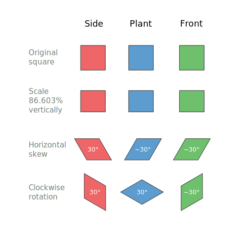

Isometric graphics in Inkscape
Sometimes I find myself in need of making a schematic using an isometric projection. When the schematic is complicated the best shot is to use some CAD like FreeCAD, but sometimes it's just needed in simple diagrams. Another situation where this is a common needed is in video games, where "isometric art" and pixel art are pretty common.
What we want is depicted in the following figure.

That is, we want to start with some information that is drawn, or written in the case of the example, and we want to obtain how would it been seen on one of the faces of an isometric box.
Following, I will describe briefly the transformations involved in this process. If you are just interested in the recipe for doing this in Inkscape, skip to the end of this post.
Transformations involved
Since we are working on a computer screen, we are talking of 2 dimensions. Hence, all transformations are represented by 2×2 matrices. In the particular example of interest in this post we need the following transformations:
Vertical scaling
Horizontal skew
Rotation
Following are the transformation matrices.
Scaling in the vertical direction
The matrix is given by
where \(a\) is the scaling factor.
Horizontal skew
The matrix is given by
where \(a\) is the skewing angle.
Rotation
The matrix is given by
where \(a\) is the rotation angle.
Complete transformation
The complete transformation is given by
particularly,
The values seem a bit arbitrary, but they can be obtained from the isometric projection itself. But that explanation would be a bit too long for this post.
Tranformation in Inkscape
We already have the transformation matrices and we can use them in Inkscape. But first, we need to understand how it works. Inkscape uses SVG, the web standard for vector graphics. Transformations in SVG are done using the following matrix
that uses homogeneous coordinates. So, one can just press Shift + Ctrl + M
and type the components of the matrices obtained above for
\(a\), \(b\), \(c\), and \(d\); leaving
\(e\) and \(f\) as zero.
My preferred method, though, is to apply each transformation after the
other in the Transform dialog (Shift + Ctrl + M). And, this is the
method presented in the cheatsheet at the bottom of this post.
TL;DR
If you are just interested in the transformations needed in Inkscape you can check the cheatsheet below. It uses third-angle as presented below.

Cheatsheet
Keep in mind that Inkscape treats clockwise rotation as positive. Opposite to common notation in mathematics.

Comments
Comments powered by Disqus